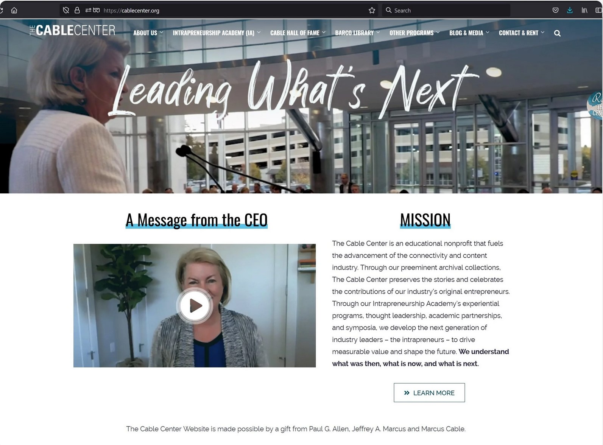

Corporate yet stylish visual identity for The Cable Center’s new institute.
The Syndeo Institute at The Cable Center (formerly The Cable Center) needed a refreshed visual identity that felt current and professional while still honoring its deep roots in the cable industry.
The solution was intentionally corporate yet stylish — elevated, confident, and warm.
Every major header used motion. The hero featured a video background of the CEO at the podium with animated text overlays. Subpages used short, purposeful video clips instead of static photography.

Former CEO Jana Henthorn speaking about the collaboration and results.
Comments about Steve Luiting and technology from the collaboration.
Rather than treating video as decoration, we made it foundational to the brand experience. The hero video set a confident, human tone. Subpage video headers created consistency while keeping each section feeling alive and current.
All video was shot and edited specifically for the site, then seamlessly integrated into the Joomla + SP Page Builder environment.